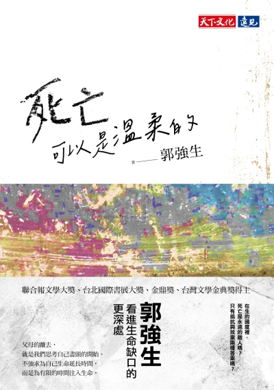

光仁11屆同梯讀書會 · 2026

死亡可以是溫柔的
如果說，沒有人會再記得自己的出生，是件惆悵又悲傷的事，那麼兩次都做為父母臨終時身邊唯一的孩子，我只能說，也許我更接近如何排練自己的死亡。
向下探索
關於這本書
About the Book
在無常中淬鍊的
溫柔哲學
隨著人生步入熟齡，我們或許都正經歷著，或即將面臨生命中重大的生老病死課題。當社會文化總教導我們要把病痛當作「敵人」，把抗癌當作一場不能輸的「戰爭」時，面對終將到來的生命盡頭，我們難道只能在恐懼與挫敗中掙扎嗎？
郭強生的私散文《死亡可以是溫柔的》，不僅是一本談論死亡的書，更是一堂教我們如何重新盤點人生、安放自我的大課。在生命的缺口處，他看見更深邃的處所。
這一次的光仁讀書會，我們將一起閱讀當代文學巨擘郭強生的私散文。期待當晚與大家在欒樹下，來一場溫柔的深度對話——在無常的命運面前，找到安放自我的無形資產，學習最深邃的溫柔。

活動資訊
Event Details
邀您共赴一場
溫柔的深度對話
邀請光仁的書友們一同來參與，在無常的命運面前，
找到安放自我的無形資產，學習最深邃的溫柔。
找到安放自我的無形資產，學習最深邃的溫柔。